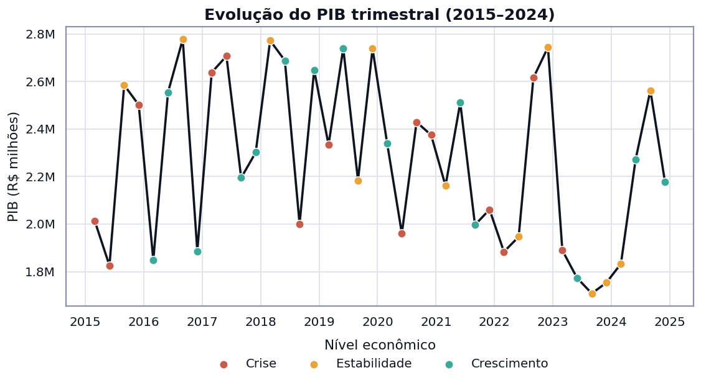
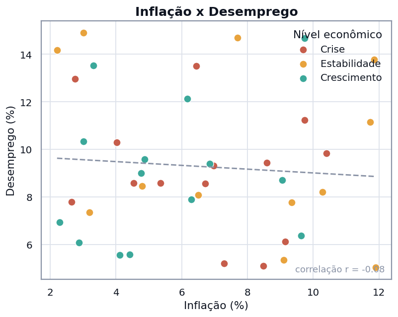
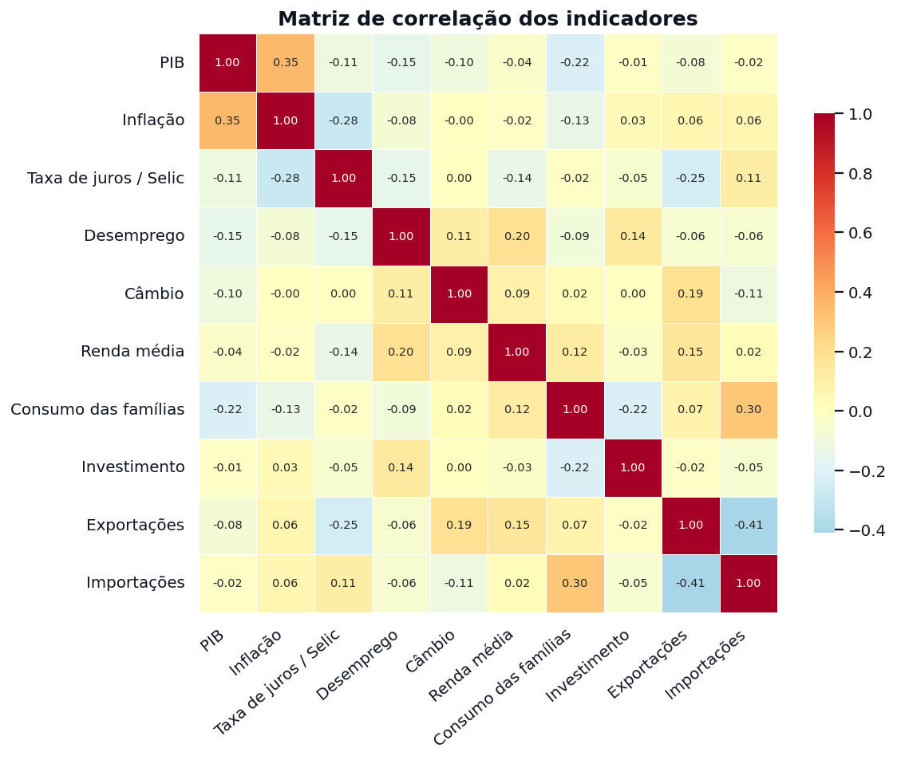
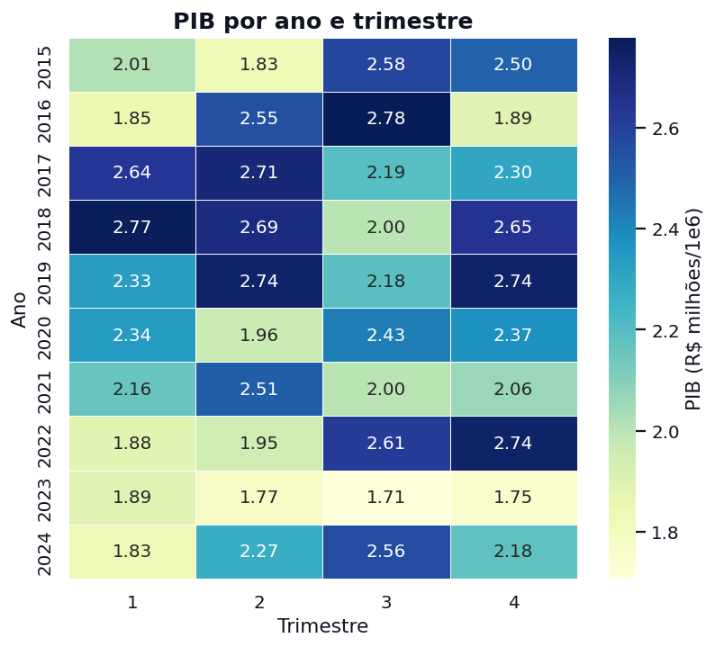
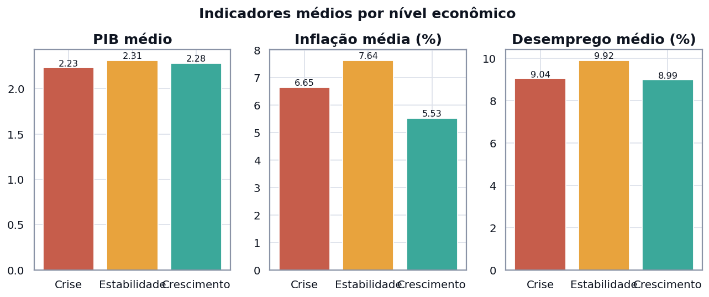
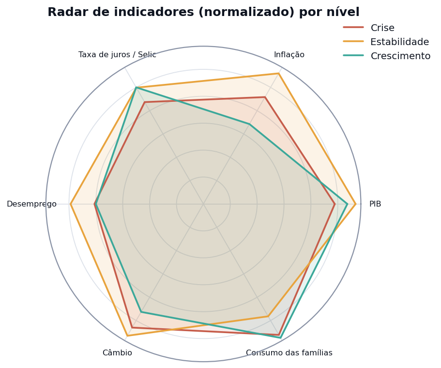

Projeto G1 · Análise e Visualização de Dados · Tema 17
Uma aplicação analítica sobre PIB, inflação, juros, desemprego e câmbio entre 2015 e 2024 — construída para separar os períodos de crise, estabilidade e crescimento e medir como os indicadores se relacionam.
Antes de publicar, troque os links acima pelos endereços reais do seu GitHub e do Streamlit Cloud (veja o README).
O que a aplicação foi construída para responder
simulacao_indicadores_economicos_brasil.csv
Cada linha é um trimestre com PIB, inflação, Selic, desemprego, câmbio, renda média, consumo, investimento, exportações e importações, além de um rótulo de nível econômico (crise, estabilidade ou crescimento). A base é simulada: serve para exercitar a metodologia de análise, não para reconstruir a história econômica real.
Um pipeline reprodutível, do CSV ao dashboard publicado
Normalização de nomes de coluna, conversão de tipos, verificação de nulos e duplicatas e ordenação cronológica.
Saldo comercial, índice de miséria, variação do PIB (t/t e a/a) e razão consumo/renda.
PIB, inflação, desemprego, juros, câmbio e crescimento médios, com variação dinâmica entre períodos.
Séries temporais, heatmaps, dispersões, radar e matriz de correlação de Pearson entre indicadores.
Banco SQLite via SQLAlchemy, com tabela fato e dimensão integradas por consultas SQL com JOIN.
Código no GitHub, esta página no GitHub Pages e o dashboard no Streamlit Community Cloud.
Seis leituras da economia, exploráveis por ano, trimestre e nível






Obrigatórias em destaque; recomendadas em complemento
Os três destinos de publicação do projeto